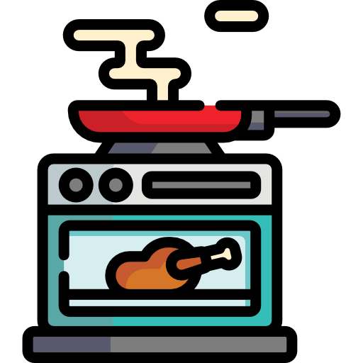

Gabriela Rodriguez
Henry
Tarea HTML / CSS
Comida Favorita
El Pasticho es un tipo de pasta. Se suele servir en láminas superpuestas intercaladas con capas de ingredientes al gusto, más frecuentemente carne en salsa boloñesa y bechamel.
Su origen es italiano.
Restaurante Favorito
